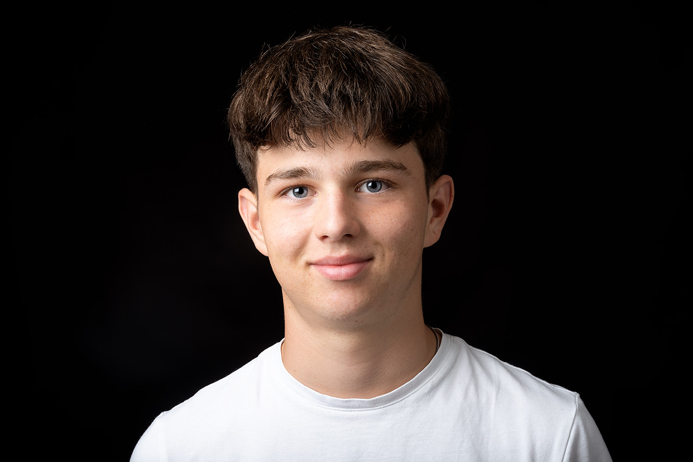

Über mich

Ich bin Maël Seewald, ein angehender Informatiker mit Fokus auf Applikationsentwicklung. Meine Leidenschaft für Technologie und Programmierung begleitet mich schon seit der Schulzeit. Aktuell befinde ich mich im ersten Lehrjahr meiner Ausbildung und arbeite an verschiedenen Projekten, um meine Fähigkeiten kontinuierlich zu erweitern.
Persönliche Informationen
- Name: Maël Seewald
- Wohnort: Zürich (Kreis 10)
- Ausbildung: Lernender Informatiker Applikationsentwicklung (1. Lehrjahr)
- Unternehmen: In Ausbildung bei Adnovum
Hobbys & Interessen
- Fussball: 2x wöchentliches Training, Match am Wochenende
- Musik: Hören verschiedener Genres zur Entspannung und Konzentration
- Schlagzeug: Untericht und üben Zuhause
Sprachen
- Deutsch: Muttersprache
- Englisch: Gut
- Französisch: In der BMS
Tools & Technologien
- Betriebssysteme: Windows, macOS, Linux
- Versionskontrolle: Git, GitHub
- Mobile Entwicklung: Flutter, React-native expo
- Datenbanken: SQLite, MariaDB
- Web: HTML, CSS, JavaScript
- Programmiersprachen: Java (Grundlagen), Python (Grundlagen),